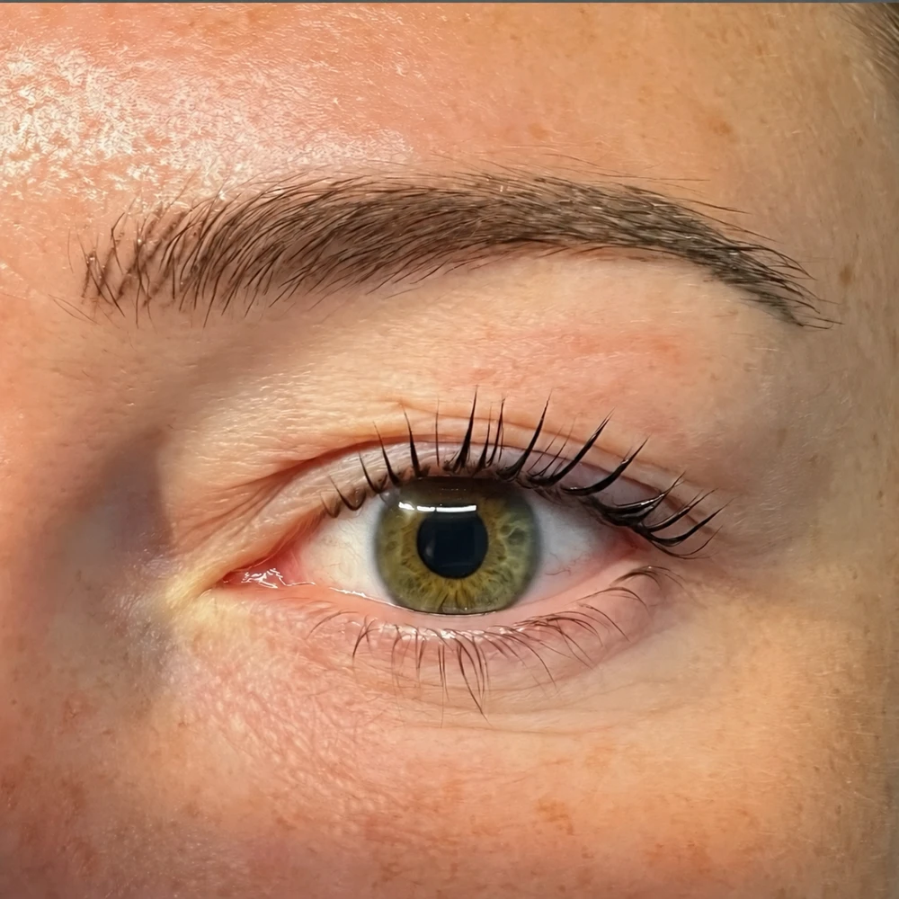
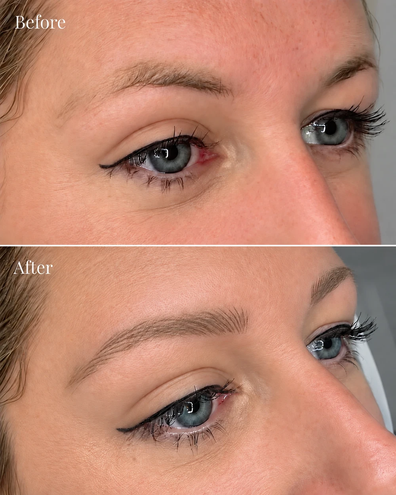
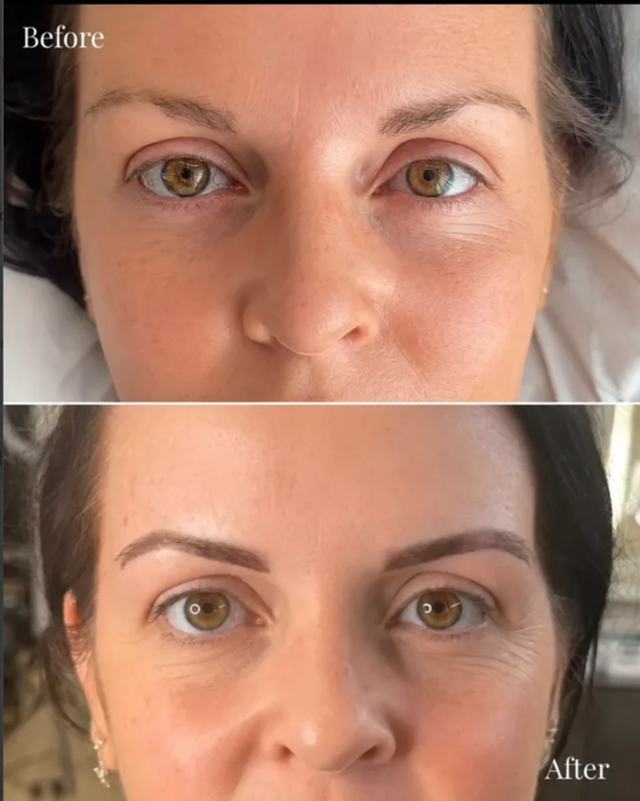

Eyebrow tattoo · Exeter & East Devon
Eyebrow tattoo in Exeter
Soft, natural-looking tattooed brows that save you time every morning. Charlotte offers two eyebrow tattoo techniques, nano hairstroke brows and ombre powder brows, from her private studio in Rockbeare, just outside Exeter.
£225 including top-up · 3–3.5 hours

What is an eyebrow tattoo?
An eyebrow tattoo, also called semi-permanent makeup (SPMU), cosmetic tattooing or micropigmentation, uses a digital machine to place pigment into the skin. It enhances the shape, fullness and definition of your brows so you can skip brow makeup day to day.
Modern eyebrow tattooing is nothing like the harsh, blocky brows of the past. Results are soft, bespoke and designed to suit your face.
Two techniques: which suits you?
Nano hairstroke brows: ultra-fine, hair-like strokes that mimic natural brow hairs. Ideal if you want to fill gaps and add fullness without a 'makeup' look. £225 including top-up, 3.5 hours.
Ombre powder brows: a soft shading technique, as sheer or as bold as you like, with a gentle gradient front. Ideal if you prefer a defined, made-up look. £225 including top-up, 3 hours.
Not sure which to choose? That's exactly what the free consultation is for.
How it works
- Free consultation. We discuss your brow goals and preferred look, complete a medical review and carry out a patch test before treatment.
- Bespoke treatment. Your brows are mapped and shaped to suit your facial structure, and we fine-tune the outline together until you are 100% happy before starting.
- Top-up at 6 weeks. Included in the price. We check how your skin has held the pigment and adjust colour or shape so your result is even and long-lasting.
Your artist
Charlotte trained with award-winning permanent makeup artist Gemma Henderson and is fully licensed and insured. Every appointment is one-to-one.
Treatments take place in Charlotte's calm, private studio in Rockbeare, just outside Exeter, with clients coming from Exeter, Exmouth, Honiton, Sidmouth, Ottery St Mary, Cullompton and across East Devon.
Eyebrow tattoo results


Your questions, answered.
Both nano hairstroke brows and ombre powder brows are £225, which includes your top-up appointment at 6 weeks.
Permanent makeup typically lasts 1–3 years. It fades gradually rather than staying like a traditional tattoo, and results depend on skin type, age, lifestyle and aftercare. A colour boost every 12–18 months keeps it looking fresh.
Most clients describe it as mild discomfort rather than pain, and many find it relaxing. Everyone's threshold is different, and we can talk it through at your consultation.
Initial healing takes 7–14 days. Brows look darker at first, then soften by around 30–40% as they heal. Your top-up appointment is at 6 weeks. You'll get full aftercare instructions; see the day-by-day brow aftercare guide.
No. Charlotte doesn't offer traditional microblading. All brow treatments use a digital machine method rather than a manual blade, which allows bespoke results and is gentler on the skin.
If you've been looking at microblading, nano hairstroke brows give a similar fine-hair effect using a machine instead of a blade.
Let's talk
Start with a free consultation.
Tell Charlotte which treatment you're interested in. She'll get in touch to answer your questions and arrange the next step.
Your enquiry is a request, rather than a confirmed appointment.
Message me on WhatsAppPrivate studio in Rockbeare, near Exeter.
Appointments by arrangement.